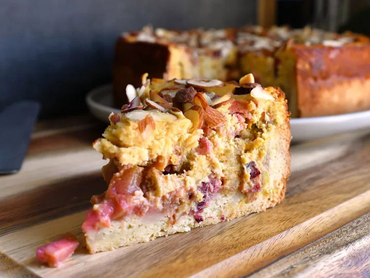

German Rhubarb Almond Cake

This rhubarb custard cake is a deliciously different cake that's very popular in Germany. The base of the cake is rich and buttery and is topped with chopped rhubarb and a decadent baked almond custard. Perfect with whipped cream or vanilla ice cream.
Rhubarb Filling
- 6 cups peeled and chopped rhubarb
- ¾ cup white sugar
Cake base
- 7 tablespoons unsalted butter, softened
- ⅓ cup white sugar
- 2 cups all-purpose flour
- 2 tablespoons white wine
- 2 tablespoons baking powder
- 1 large egg
Almond Custard
- 1 cup almond flour
- ¾ cup crème fraîche
- 2 tablespoons crème fraîche
- ⅔ cup white sugar
- 2 large eggs
- 2 teaspoons vanilla sugar
- 1 teaspoon ground cinnamon